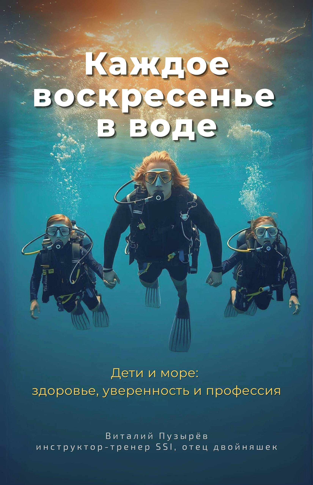

Каждое воскресенье — в воде
Практическое руководство для родителей: как путь ребёнка в воде может постепенно превратиться в осознанную часть жизни.
Доступ к первой версии книги и всем обновлениям по мере развития проекта. Цена действует только до выхода первой версии.
PDF / EPUB · все обновления включены
Что вы получите
- Понимание, как безопасно и без давления вовлечь ребёнка в дайвинг
- Чёткую картину возможных путей — от увлечения до профессии
- Доступ к дополнительным материалам через QR-коды по мере развития проекта
О книге
Эта книга написана инструктором-тренером по дайвингу и отцом. Она о реальном пути ребёнка в воде — от первых шагов до осознанного выбора профессии.
Книга дополнена QR-кодами. По ним доступны примеры из практики, комментарии автора и материалы, которые постепенно расширяют проект.
Эта книга не про быстрые результаты и не про принуждение. Она подойдёт тем, кто готов рассматривать путь ребёнка вдолгую.
Попробуйте перед покупкой
Фрагмент из книги
Сомнения — это первое, с чем я сталкиваюсь почти в каждом разговоре с родителями. И это нормально. Более того — это правильно.
Родитель, у которого нет вопросов и тревог, либо ещё не понял, о чём идёт речь, либо просто не включился по-настоящему.
Настоящая забота всегда начинается с сомнений: «А безопасно ли это?», «А вдруг не понравится?», «А не рано ли?», «А зачем вообще всё это?»
Когда речь заходит о воде и море, эти вопросы звучат особенно остро.
И здесь важно сразу сказать одну простую вещь:
ваши сомнения не мешают ребёнку — они его защищают.

Вопросы и ответы
А если книга не подойдёт?
Возврат возможен по запросу. Мне важно, чтобы решение было спокойным.
Книга уже готова или это только идея?
Книга уже существует — вы получаете доступ к текущей версии сразу после покупки.
Проект задуман как живой: текст будет дополняться, а материалы будут постепенно расширяться.
Все обновления включены.
Почему покупать сейчас, если книга ещё дополняется?
Потому что вы получаете доступ к первой версии книги по минимальной цене и все обновления — без доплаты.
Не рано ли говорить о профессии?
Речь не о выборе профессии, а о понимании возможного пути развития.
Зачем в книге QR-коды?
Они позволяют дополнять книгу материалами без переписывания издания.